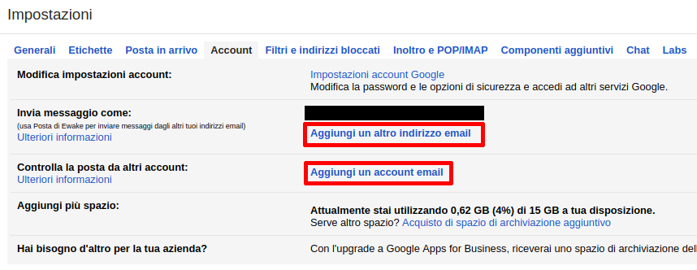
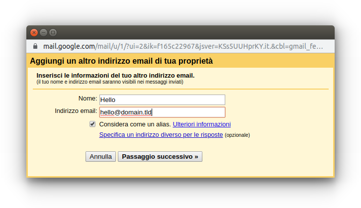
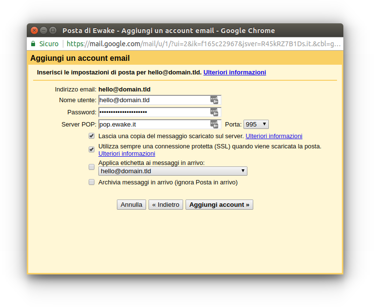
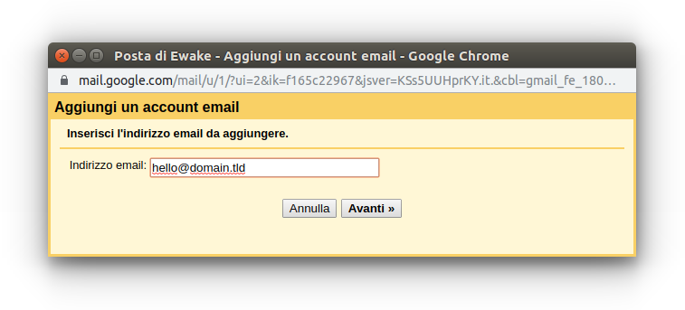
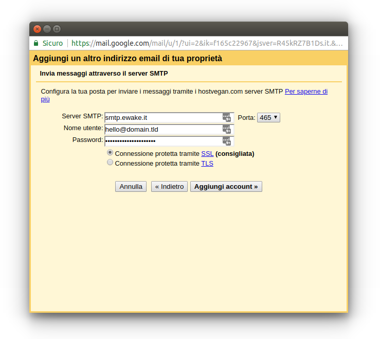

Suggerimenti
Gestione dello SPAM
La lotta allo SPAM può avere successo solo se si opera su più fronti: lato server e lato utente.
Sui server di posta avvengono dei processi automatici, generalmente notturni, che:
classificano come indesiderate tutte le email presenti nelle cartelle SPAM degli utenti
classificano come desiderate tutte le email presenti nelle cartelle ARCHIVIO degli utenti
cancellano le email più vecchie di 90 giorni presenti nelle cartelle SPAM degli utenti
Lato utente è quindi di fondamentale importanza:
non cancellare o spostare nel cestino le email indesiderate, ma spostarle nella cartella SPAM, altrimenti il filtro antispam non impara a classificare la posta indesiderata
utilizzare la funzione “Archivio” presente sia nelle più comuni webmail che nei client di posta (Outlook, Thunderbird, etc.) per tutte le email desiderate, in modo da evitare i falsi positivi del filtro antispam
non archiviare mai le email indesiderate, altrimenti il filtro antispam classifica come desiderata anche la posta che dovrebbe essere indesiderata
Disattivazione delle conferme di lettura
Le conferme di lettura (in inglese Return Receipts o Read Receipts) sono notifiche automatiche che il client del destinatario invia al mittente quando un messaggio viene aperto.
Attenzione
Le caselle ospitate presso Frugan sono soggette a limiti sul numero di messaggi inviabili. Anche le conferme di lettura rientrano nel conteggio dei messaggi inviati, quindi si consiglia di disattivarne l’invio automatico sul proprio client di posta per evitare di superare inutilmente tali limiti.
La disattivazione rilevante è quella lato destinatario, cioè evitare che il proprio client di posta risponda automaticamente alle richieste di conferma presenti nei messaggi in arrivo.
Mozilla Thunderbird
Aprire Impostazioni e scorrere la sezione Generale fino a trovare le opzioni relative alle Conferme di lettura (in inglese Return Receipts).
Alla voce Quando arriva un messaggio che richiede una conferma di lettura selezionare Non inviare mai una conferma di lettura.
In alternativa è possibile configurare il comportamento per singolo account in Impostazioni account → <account> → Conferme di lettura, spuntando Personalizza le conferme di lettura per questo account e selezionando le opzioni desiderate.
Microsoft Outlook
Aprire File → Opzioni → Posta e cercare la sezione Verifica messaggi.
Alla voce Per qualsiasi messaggio ricevuto che includa una richiesta di conferma di lettura selezionare Non inviare mai una conferma di lettura.
Webmail
Nella webmail principale Frugan (Roundcube), aprire Impostazioni → Preferenze → Visualizzazione messaggi, e alla voce Su richiesta per la ricevuta di ritorno selezionare ignora la richiesta.
Anche nelle webmail secondarie l’opzione di disattivazione delle conferme di lettura è generalmente disponibile in una sezione analoga delle preferenze utente.
Recupero e invio della posta esterna tramite Gmail
Attenzione
Gmail ha dismesso il recupero della posta di terze parti tramite POP3, leggi qui https://support.google.com/mail/answer/16604719.
Gmail permette l’aggiunta di ulteriori account di posta esterni a Gmail (fetchmailing) sia in arrivo che in uscita.
È possibile quindi utilizzare Gmail per collegarsi ai server di posta Frugan, andando nelle impostazioni di Gmail:

e impostando gli stessi parametri riportati in Configurazione dei client di posta, sia per la posta in arrivo:


che per la posta in uscita:

